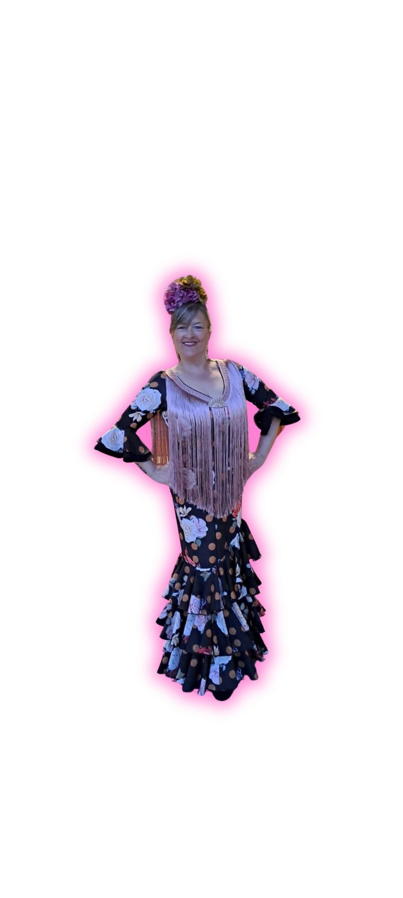

JonathanSalsa y mambo

Salsa, bachata, zouk brasileño, kizomba, samba, sevillanas, danza oriental y taichí. Clases para todos los niveles en un ambiente cercano y familiar.
Descubre nuestras disciplinas y elige la tuya. Cada estilo tiene su esencia, su ritmo y una comunidad única.

En A Tu Ritmo vivimos el baile como una forma de compartir, expresarnos y disfrutar juntos. Un espacio donde la música, la técnica y el buen ambiente se unen para que cada persona avance a su ritmo.
Conoce nuestra escuelaProfesionales con gran trayectoria que te acompañarán en cada paso. Diferentes estilos, una misma pasión.



¿Te apetece probar un estilo nuevo? Solicita una clase de prueba gratuita y descubre nuestra escuela desde dentro. Sin compromiso.
Un encuentro para formarse, conectar y disfrutar del zouk brasileño. La escuela también se encuentra en congresos y actividades.
Descubre el congreso →